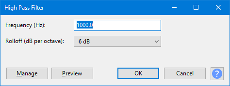
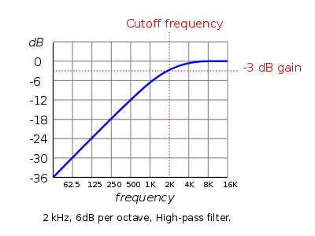

High Pass Filter
- Accessed by:
- 
Rolloff (dB per octave)
Sets the steepness of the attenuation. Higher rolloff values give a steeper attenuation of frequencies below the cutoff frequency. For example, with a rolloff of 6 dB per octave, the sound decreases by 6 dB in amplitude for each octave below the cutoff frequency (an octave above is double the frequency).
Cutoff frequency (Hz)
Sound below this cutoff frequency in Hz is not eliminated but increasingly attenuated as the frequency falls further below the cutoff.
The cutoff frequency (sometimes also called corner frequency) defines the point at which the audio is reduced by 3 dB. Thus there will also be a small and decreasing amount of attenuation just above the cutoff frequency as in the following image.
- 
To achieve more attenuation, run the effect again or use a greater rolloff.
Buttons
Clicking on the command buttons give the following results:
- gives a dropdown menu enabling you to manage presets for the tool and to see some detail about the tool. For details see Manage presets.
- plays a short preview of what the audio would sound like if the effect is applied with the current settings, without making actual changes to the audio. The length of preview is determined by your setting in , the default setting is 6 seconds.
- applies the effect to the selected audio with the current effect settings.
- aborts the effect and leaves the audio unchanged.
 brings you to the appropriate page in the Manual, this page.
brings you to the appropriate page in the Manual, this page.